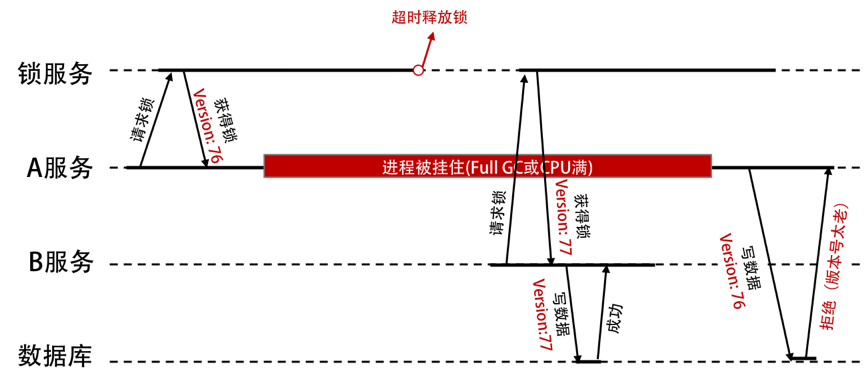

- 000 开篇词 洞悉技术的本质，享受科技的乐趣.md.html
- 001 程序员如何用技术变现（上）.md.html
- 002 程序员如何用技术变现（下）.md.html
- 003 Equifax信息泄露始末.md.html
- 004 从Equifax信息泄露看数据安全.md.html
- 005 何为技术领导力.md.html
- 006 如何拥有技术领导力.md.html
- 007 推荐阅读：每个程序员都该知道的事.md.html
- 008 Go语言，Docker和新技术.md.html
- 009 答疑解惑：渴望、热情和选择.md.html
- 010 如何成为一个大家愿意追随的Leader？.md.html
- 011 程序中的错误处理：错误返回码和异常捕捉.md.html
- 012 程序中的错误处理：异步编程和最佳实践.md.html
- 013 魔数 0x5f3759df.md.html
- 014 推荐阅读：机器学习101.md.html
- 015 时间管理：同扭曲时间的事儿抗争.md.html
- 016 时间管理：投资赚取时间.md.html
- 017 故障处理最佳实践：应对故障.md.html
- 018 故障处理最佳实践：故障改进.md.html
- 019 答疑解惑：我们应该能够识别的表象和本质.md.html
- 020 分布式系统架构的冰与火.md.html
- 021 从亚马逊的实践，谈分布式系统的难点.md.html
- 022 分布式系统的技术栈.md.html
- 023 分布式系统关键技术：全栈监控.md.html
- 024 分布式系统关键技术：服务调度.md.html
- 025 分布式系统关键技术：流量与数据调度.md.html
- 026 洞悉PaaS平台的本质.md.html
- 027 推荐阅读：分布式系统架构经典资料.md.html
- 028 编程范式游记（1）- 起源.md.html
- 029 编程范式游记（2）- 泛型编程.md.html
- 030 编程范式游记（3） - 类型系统和泛型的本质.md.html
- 031 Git协同工作流，你该怎样选.md.html
- 032 推荐阅读：分布式数据调度相关论文.md.html
- 033 编程范式游记（4）- 函数式编程.md.html
- 034 编程范式游记（5）- 修饰器模式.md.html
- 035 编程范式游记（6）- 面向对象编程.md.html
- 036 编程范式游记（7）- 基于原型的编程范式.md.html
- 037 编程范式游记（8）- Go 语言的委托模式.md.html
- 038 编程范式游记（9）- 编程的本质.md.html
- 039 编程范式游记（10）- 逻辑编程范式.md.html
- 040 编程范式游记（11）- 程序世界里的编程范式.md.html
- 041 弹力设计篇之“认识故障和弹力设计”.md.html
- 042 弹力设计篇之“隔离设计”.md.html
- 043 弹力设计篇之“异步通讯设计”.md.html
- 044 弹力设计篇之“幂等性设计”.md.html
- 045 弹力设计篇之“服务的状态”.md.html
- 046 弹力设计篇之“补偿事务”.md.html
- 047 弹力设计篇之“重试设计”.md.html
- 048 弹力设计篇之“熔断设计”.md.html
- 049 弹力设计篇之“限流设计”.md.html
- 050 弹力设计篇之“降级设计”.md.html
- 051 弹力设计篇之“弹力设计总结”.md.html
- 052 区块链技术 - 区块链的革命性及技术概要.md.html
- 053 区块链技术 - 区块链技术细节 - 哈希算法.md.html
- 054 区块链技术 - 区块链技术细节 - 加密和挖矿.md.html
- 055 区块链技术 - 去中心化的共识机制.md.html
- 056 区块链技术 - 智能合约.md.html
- 057 区块链技术 - 传统金融和虚拟货币.md.html
- 058 管理设计篇之分布式锁.md.html
- 059 管理设计篇之配置中心.md.html
- 060 管理设计篇之边车模式.md.html
- 061 管理设计篇之服务网格.md.html
- 062 管理设计篇之网关模式.md.html
- 063 管理设计篇之部署升级策略.md.html
- 064 性能设计篇之缓存.md.html
- 065 性能设计篇之异步处理.md.html
- 066 性能设计篇之数据库扩展.md.html
- 067 性能设计篇之秒杀.md.html
- 068 性能设计篇之边缘计算.md.html
- 069 程序员练级攻略（2018）：开篇词.md.html
- 070 程序员练级攻略（2018）：零基础启蒙.md.html
- 071 程序员练级攻略（2018）：正式入门.md.html
- 072 程序员练级攻略（2018）：程序员修养.md.html
- 073 程序员练级攻略（2018）：编程语言.md.html
- 074 程序员练级攻略：理论学科.md.html
- 075 程序员练级攻略（2018）：系统知识.md.html
- 076 程序员练级攻略（2018）：软件设计.md.html
- 077 程序员练级攻略（2018）：Linux系统、内存和网络.md.html
- 078 程序员练级攻略（2018）：异步IO模型和Lock-Free编程.md.html
- 079 程序员练级攻略（2018）：Java底层知识.md.html
- 080 程序员练级攻略（2018）：数据库.md.html
- 081 程序员练级攻略（2018）：分布式架构入门.md.html
- 082 程序员练级攻略（2018）：分布式架构经典图书和论文.md.html
- 083 程序员练级攻略（2018）：分布式架构工程设计.md.html
- 084 程序员练级攻略（2018）：微服务.md.html
- 085 程序员练级攻略（2018）：容器化和自动化运维.md.html
- 086 程序员练级攻略（2018）：机器学习和人工智能.md.html
- 087 程序员练级攻略（2018）：前端基础和底层原理.md.html
- 088 程序员练级攻略（2018）：前端性能优化和框架.md.html
- 089 程序员练级攻略（2018）：UIUX设计.md.html
- 090 程序员练级攻略（2018）：技术资源集散地.md.html
- 091 程序员面试攻略：面试前的准备.md.html
- 092 程序员面试攻略：面试中的技巧.md.html
- 093 程序员面试攻略：面试风格.md.html
- 094 程序员面试攻略：实力才是王中王.md.html
- 095 高效学习：端正学习态度.md.html
- 096 高效学习：源头、原理和知识地图.md.html
- 097 高效学习：深度，归纳和坚持实践.md.html
- 098 高效学习：如何学习和阅读代码.md.html
- 099 高效学习：面对枯燥和量大的知识.md.html
- 100 高效沟通：Talk和Code同等重要.md.html
- 101 高效沟通：沟通阻碍和应对方法.md.html
- 102 高效沟通：沟通方式及技巧.md.html
- 103 高效沟通：沟通技术.md.html
- 104 高效沟通：好老板要善于提问.md.html
- 105 高效沟通：好好说话的艺术.md.html
- 106 加餐 谈谈我的“三观”.md.html
- 107 结束语 业精于勤，行成于思.md.html
058 管理设计篇之分布式锁
我们知道，在多线程情况下访问一些共享资源需要加锁，不然就会出现数据被写乱的问题。在分布式系统下，这样的问题也是一样的。只不过，我们需要一个分布式的锁服务。对于分布式的锁服务，一般可以用数据库 DB、Redis 和 ZooKeeper 等实现。不管怎么样，分布式的锁服务需要有以下几个特点。
- 安全性（Safety）：在任意时刻，只有一个客户端可以获得锁（排他性）。
- 避免死锁：客户端最终一定可以获得锁，即使锁住某个资源的客户端在释放锁之前崩溃或者网络不可达。
- 容错性：只要锁服务集群中的大部分节点存活，Client 就可以进行加锁解锁操作。
Redis 的分布式锁服务
这里提一下，避免死锁的问题。下面以 Redis 的锁服务为例（参考 Redis 的官方文档 ）。
我们通过以下命令对资源加锁。
SET resource_name my_random_value NX PX 30000
解释一下：
SET NX命令只会在key不存在的时候给key赋值，PX命令通知 Redis 保存这个 key 30000ms。my_random_value必须是全局唯一的值。这个随机数在释放锁时保证释放锁操作的安全性。- PX 操作后面的参数代表的是这个 key 的存活时间，称作锁过期时间。
- 当资源被锁定超过这个时间时，锁将自动释放。
- 获得锁的客户端如果没有在这个时间窗口内完成操作，就可能会有其他客户端获得锁，引起争用问题。
这里的原理是，只有在某个 key 不存在的情况下才能设置（set）成功该 key。于是，这就可以让多个进程并发去设置同一个 key，只有一个进程能设置成功。而其它的进程因为之前有人把 key 设置成功了，而导致失败（也就是获得锁失败）。
我们通过下面的脚本为申请成功的锁解锁：
if redis.call("get",KEYS[1]) == ARGV[1] then
return redis.call("del",KEYS[1])
else
return 0
end
如果 key 对应的 value 一致，则删除这个 key。
通过这个方式释放锁是为了避免 Client 释放了其他 Client 申请的锁。
例如，下面的例子演示了不区分 Client 会出现的一种问题。
- Client A 获得了一个锁。
- 当尝试释放锁的请求发送给 Redis 时被阻塞，没有及时到达 Redis。
- 锁定时间超时，Redis 认为锁的租约到期，释放了这个锁。
- Client B 重新申请到了这个锁。
- Client A 的解锁请求到达，将 Client B 锁定的 key 解锁。
- Client C 也获得了锁。
- Client B 和 Client C 同时持有锁。
通过执行上面脚本的方式释放锁，Client 的解锁操作只会解锁自己曾经加锁的资源，所以是安全的。
关于 value 的生成，官方推荐从 /dev/urandom 中取 20 个 byte 作为随机数。或者采用更加简单的方式，例如使用 RC4 加密算法在 /dev/urandom 中得到一个种子（Seed），然后生成一个伪随机流。
也可以采用更简单的方法，使用时间戳 + 客户端编号的方式生成随机数。Redis 的官方文档说：“这种方式的安全性较差一些，但对于绝大多数的场景来说已经足够安全了”。
分布式锁服务的一个问题
注意，虽然 Redis 文档里说他们的分布式锁是没有问题的，但其实还是很有问题的。尤其是上面那个为了避免 Client 端把锁占住不释放，然后，Redis 在超时后把其释放掉。不知道你怎么样想，但我觉得这事儿听起来就有点不靠谱。
我们来脑补一下，不难发现下面这个案例。
- 如果 Client A 先取得了锁。
- 其它 Client（比如说 Client B）在等待 Client A 的工作完成。
- 这个时候，如果 Client A 被挂在了某些事上，比如一个外部的阻塞调用，或是 CPU 被别的进程吃满，或是不巧碰上了 Full GC，导致 Client A 花了超过平时几倍的时间。
- 然后，我们的锁服务因为怕死锁，就在一定时间后，把锁给释放掉了。
- 此时，Client B 获得了锁并更新了资源。
- 这个时候，Client A 服务缓过来了，然后也去更新了资源。于是乎，把 Client B 的更新给冲掉了。
- 这就造成了数据出错。
这听起来挺严重的吧。我画了个图示例一下。
千万不要以为这是脑补出来的案例。其实，这个是真实案例。HBase 就曾经遇到过这样的问题，你可以在他们的 PPT（HBase and HDFS: Understanding FileSystem Usage in HBase）中看到相关的描述。
要解决这个问题，你需要引入 fence（栅栏）技术。一般来说，这就是乐观锁机制，需要一个版本号排它。我们的流程就变成了下图中的这个样子。

我们从图中可以看到：
- 锁服务需要有一个单调递增的版本号。
- 写数据的时候，也需要带上自己的版本号。
- 数据库服务需要保存数据的版本号，然后对请求做检查。
如果使用 ZooKeeper 做锁服务的话，那么可以使用 zxid 或 znode 的版本号来做这个 fence 版本号。
从乐观锁到 CAS
但是，我们想想，如果数据库中也保留着版本号，那么完全可以用数据库来做这个锁服务，不就更方便了吗？下面的图展示了这个过程。
使用数据版本（Version）记录机制，即为数据增加一个版本标识，一般是通过为数据库表增加一个数字类型的 “version” 字段来实现的。当读取数据时，将 version 字段的值一同读出，数据每更新一次，对此 version 值加一。
当我们提交更新的时候，数据库表对应记录的当前版本信息与第一次取出来的 version 值进行比对。如果数据库表当前版本号与第一次取出来的 version 值相等，则予以更新，否则认为是过期数据。更新语句写成 SQL 大概是下面这个样子：
UPDATE table_name SET xxx = #{xxx}, version=version+1 where version =#{version};
这不就是乐观锁吗？是的，这是乐观锁最常用的一种实现方式。是的，如果我们使用版本号，或是 fence token 这种方式，就不需要使用分布式锁服务了。
另外，多说一下。这种 fence token 的玩法，在数据库那边一般会用 timestamp 时间截来玩。也是在更新提交的时候检查当前数据库中数据的时间戳和自己更新前取到的时间戳进行对比，如果一致则 OK，否则就是版本冲突。
还有，我们有时候都不需要增加额外的版本字段或是 fence token。比如，如果想更新库存，我们可以这样操作：
SELECT stock FROM tb_product where product_id=#{product_id};
UPDATE tb_product SET stock=stock-#{num} WHERE product_id=#{product_id} AND stock=#{stock};
先把库存数量（stock）查出来，然后在更新的时候，检查一下是否是上次读出来的库存。如果不是，说明有别人更新过了，我的 UPDATE 操作就会失败，得重新再来。
细心的你一定发现了，这不就是计算机汇编指令中的原子操作 CAS（Compare And Swap）嘛，大量无锁的数据结构都需要用到这个。（关于 CAS 的话题，你可以看一下我在 CoolShell 上写的无锁队列的实现 ）。
我们一步一步地从分布式锁服务到乐观锁，再到 CAS，你看到了什么？你是否得思考一个有趣的问题——我们还需要分布式锁服务吗？
分布式锁设计的重点
最后，我们来谈谈分布式锁设计的重点。
一般情况下，我们可以使用数据库、Redis 或 ZooKeeper 来做分布式锁服务，这几种方式都可以用于实现分布式锁。
分布式锁的特点是，保证在一个集群中，同一个方法在同一时间只能被一台机器上的一个线程执行。这就是所谓的分布式互斥。所以，大家在做某个事的时候，要去一个服务上去请求一个标识。如果请求到了，我们就可以操作，操作完后，把这个标识还回去，这样别的进程就可以请求到了。
首先，我们需要明确一下分布式锁服务的初衷和几个概念性的问题。
- 如果获得锁的进程挂掉了怎么办？锁还不回来了，会导致死锁。一般的处理方法是在锁服务那边加上一个过期时间，如果在这个时间内锁没有被还回来，那么锁服务要自动解锁，以避免全部锁住。
- 如果锁服务自动解锁了，新的进程就拿到锁了，但之前的进程以为自己还有锁，那么就出现了两个进程拿到了同一个锁的问题，它们在更新数据的时候就会产生问题。对于这个问题，我想说：
- 像 Redis 那样也可以使用 Check and Set 的方式来保证数据的一致性。这就有点像计算机原子指令 CAS（Compare And Swap）一样。就是说，我在改变一个值的时候先检查一下是不是我之前读出来的值，这样来保证其间没有人改过。
- 如果通过像 CAS 这样的操作的话，我们还需要分布式锁服务吗？的确是不需要了，不是吗？
- 但现实生活中也有不需要更新某个数据的场景，只是为了同步或是互斥一下不同机器上的线程，这时候像 Redis 这样的分布式锁服务就有意义了。
所以，需要分清楚：我是用来做修改某个共享源的，还是用来做不同进程间的同步或是互斥的。如果使用 CAS 这样的方式（无锁方式）来更新数据，那么我们是不需要使用分布式锁服务的，而后者可能是需要的。所以，这是我们在决定使用分布式锁服务前需要考虑的第一个问题——我们是否需要？
如果确定要分布式锁服务，你需要考虑下面几个设计。
- 需要给一个锁被释放的方式，以避免请求者不把锁还回来，导致死锁的问题。Redis 使用超时时间，ZooKeeper 可以依靠自身的 sessionTimeout 来删除节点。
- 分布式锁服务应该是高可用的，而且是需要持久化的。对此，你可以看一下 Redis 的文档 RedLock 看看它是怎么做到高可用的。
- 要提供非阻塞方式的锁服务。
- 还要考虑锁的可重入性。
我认为，Redis 也是不错的，ZooKeeper 在使用起来需要有一些变通的方式，好在 Apache 有 Curator 帮我们封装了各种分布式锁的玩法。
小结
好了，我们来总结一下今天分享的主要内容。首先，我介绍了为什么需要分布式锁。就像单机系统上的多线程程序需要用操作系统锁或数据库锁来互斥对共享资源的访问一样，分布式程序也需要通过分布式锁来互斥对共享资源的访问。
分布式锁服务一般可以通过 Redis 和 ZooKeeper 等实现。接着，以 Redis 为例，我介绍了怎样用它来加锁和解锁，由此引出了锁超时后的潜在风险。我们看到，类似于数据库的乐观并发控制，这种风险可以通过版本号的方式来解决。
进一步，数据库如果本身利用 CAS 等手段支持这种版本控制方式，其实也就没必要用一个独立的分布式锁服务了。最后，我们发现，分布式锁服务还能用来做同步，这是数据库锁做不了的事情。下篇文章中，我们讲述配置中心。希望对你有帮助。
也欢迎你分享一下你在哪些场景下会用到锁？用哪种平台的锁服务？有没有用到数据库锁？是 OCC，还是悲观锁？如果是悲观锁的话，又是怎样避免死锁的？